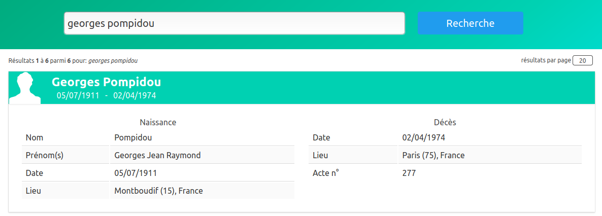
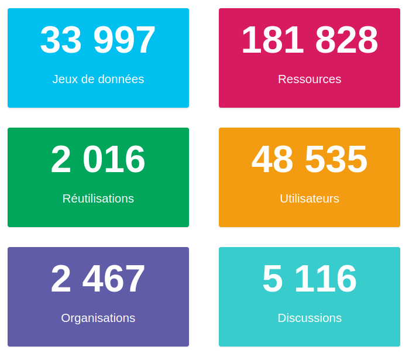
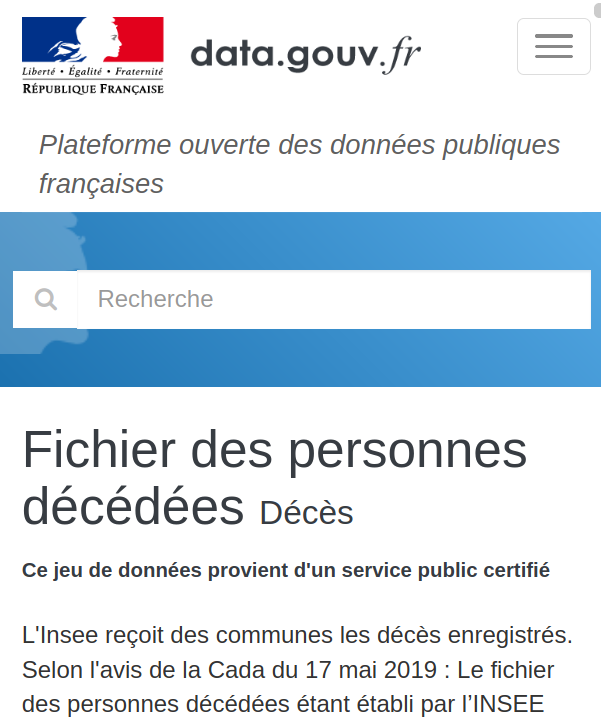

### dev.js, dataops & devops <img height="100" style="border : 0;box-shadow: none;" data-src="img/matchID-logo.svg" alt="matchID"> les prétextes et la génèse de [deces.matchid.io](https://deces.matchid.io) <small>fabien.antoine@m4x.org</small>
## L'objectif Publier un moteur de recherche des décès 
## L'opportunité <div class="container center"> <div class="col"> début 2017...<br/> <br/> <small>au "MI", le projet matchID réalise en POC un moteur de recherche des décès avec le fichier INSEE, alors fermé</small> </div> <div class="col"> ... fin 2019<br/> <img height="150px" style="border : 0;box-shadow: none;" data-src="img/logo_insee.svg" alt="logo Insee"> <br/> <small>l'INSEE publie l'ensemble des 25 millions d'enregistrements de décès depuis 1970 <a href="https://www.data.gouv.fr/fr/datasets/fichier-des-personnes-decedees/)">data.gouv</a></small> </div> </div>
## Les envies - valoriser l'effort d'ouverture de l'INSEE - capitaliser sur l'expérience du ministère - offrir un service minimal gratuit - découvrir d'autres framework .js - évaluer plusieurs IaaS de la French Tech
## Data sources <ul> <li>source INSEE</li> <li>catalogue et APIs data.gouv</li> <li>stocackge objet S3</li> </ul>
## La source INSEE <small> <ul> <li>nom, prénom(s)</li> <li>date/lieu de naissance/décès</li> <li>n° d'acte de décès</li> <br/> <li>25 millions d'enregistrements</li> <li>49 fichiers, 730Mo compressé</li> <li>environ 620k décès/an aujourd'hui</li> <br/> <li><i>fixed width file</i> (champs fixes) </li> <li><i>~ascii (sauf quelques lignes...) </li> </ul> </small> <small><pre><code> DUCRET*MARIE ANTOINETTE/ 21922010901004AMBERIEU-EN-BUGEY 19701210014216 GRANGEON*ERIC JEAN REMY/ 11969032901004AMBERIEU-EN-BUGEY 19700425693831059 VELLET*PHILIPPE/ 11970020101004AMBERIEU-EN-BUGEY 197002030100412 PRESSAVIN*LYDIE/ 21970040601004AMBERIEU-EN-BUGEY 197004060100433 DOUAT*MARIE-SYLVIA MARTINE/ 21970070801004AMBERIEU-EN-BUGEY 1970070801053457 </code></pre></small> 🤮 🤮 🤮 <small><small>(merci quand même à l'INSEE : c'est bien moche mais très carré - et précieux !)</small></small>
## Le catalogue [DATA.GOUV](https://www.data.gouv.fr/fr/datasets/fichier-des-personnes-decedees) <div class="container center"> <div class="col"> <small> data.gouv c'est une plateforme de publication de données ouvertes - en quelques chiffres : </small><br/>  <br/> </div> <div class="col"> <small>on y retrouve les 49 fichiers INSEE, faciles d'accès, et quelques réutilisations</small> <a href="https://www.data.gouv.fr/fr/datasets/fichier-des-personnes-decedees">  </a> </div> </div>
## [L'API data.gouv](https://doc.data.gouv.fr/api/reference/#/) <div class="container"> <div class="col left"> <small> <p> Télécharger 49 fichier à la main, c'est simple mais peu réaliste pour des opérations récurrentes. </p> <p> Heureusement, l'API de data.gouv existe, très lisible et documentée en Swagger via FlaskRestPlus :<br/> <small><a href="https://doc.data.gouv.fr/api/reference/#/"><code> https://doc.data.gouv.fr/api/reference/#/</code></a></small> </p> <p> Le endpoint pour notre dataset est : <br> <small> <a href="https://www.data.gouv.fr/api/1/datasets/fichier-des-personnes-decedees"> <code "is-small">https://www.data.gouv.fr/api/1/datasets/fichier-des-personnes-decedees</code> </a> </small> </p> <p> Le schéma du JSON est épais, le chemin qui nous intéresse est <code>resources.url</code>. </p> </small> </div> <div class="col left"> <small> <p> Pour récupérer les 49 fichiers en shell et les compresser : </p> <small><code> curl -s https://www.data.gouv.fr/api/1/datasets/fichier-des-personnes-decedees/ | jq '.resources[].url' | sed 's/^/curl -s /;s:/\(deces-.*\)":/\1" | gzip > \1.gz:' | sh </code></small> <p> N'hésitez pas à décomposer la commande pour les curieux </p> <p> Vous noterez l'utilisation de <a href="https://stedolan.github.io/jq/"><code>jq</code></a>. Cet outil est devenu incontournable à l'ère des API, pour ceux qui font encore du shell. </p> <p> Pour les habitués de langage plus évolués Python ou Node, la récupération ne sort pas des habitudes. </p> </small> </div>
## Stockage objet - S3 <div class="container higher"> <div class="col left"> <small> <p> Le stockage objet est arrivé avec le monde <b>cloud</b>: S3 AWS, Swift OS, Blob Azure, Cloud storage GCP... </p> <p/> C'est le stockage <b>gros volume</b>, par opposition au stockage bloc (prérequis du compute, intégré aux API type EC2) </p> <p> C'est le <b>partage de fichier</b>, il unifie: le samba/nfs, le sftp, le webdav. On peut même l'utiliser en collaboratif (partage Windows ou sur le cloud type NextCloud). </p> <p> C'est aussi la <b>sauvegardes</b> des nouvelles architectures (base de donnée, ...), l'archivage légal restant pour un stockage archive de type Amazon Glacier. </p> </small> </div> <div class="col left"> <small> <p> Le bénéfice ? Des <b>SLA et tarifs très clairs</b> pour un achat à l'usage réel, ponctuel ou pas, pour des <b>gigas ou des pétas</b>. </p> <p >Un résilience jusqu'à 99.9999+% selon le nombre de réplicats (3 à 6) le plus souvent configurables, et des débits au rendez-vous : 30Mo/s à plus de 150Mo/s. </p> <p> Le <b>standard d'API est maintenant clairement S3</b> même en OpenStack. </p> <p> Dans la French Tech, <a href="https://www.scaleway.com/fr/object-storage/">Scaleway</a>, <a href="https://docs.ovh.com/gb/en/public-cloud/getting_started_with_the_swift_S3_API/">OVH</a>, et <a href="https://fr.outscale.com/solutions-stockage-cloud/stockage-objet/">Outscale</a> offrent le stockage objet accessible avec les API S3. <p> <p> Un stockage Cloud donc, mais avec une localisation possible et un choix de fournisseurs large <b>#RGPD</b> </p> </small> </div> </div>
## S3 et data <div class="container higher"> <div class="col left"> <small> <p> On y accède bien sûr via une IHM facile en drag'n drop chez ls fournisseurs, mais on se rabat sur un NextCloud si c'est l'objecitif n'est pas de soulever le capôt. Tous les langages orienté offrent un support avancé aux API S3. </p> <p> Et bien sur, toutes solutions de data le supportent: Kafka, Airflow, Talend, Dataiku, Hadoop (HDFS over S3) ... et maintenant 🤩 matchID 🤩. </p> <p> Donc, aujourd'hui, <b>la donnée à froid</b>, c'est en S3 !</p> </small> </div> <div class="col left"> <small> <p> L'accès par API stockage objet vient avec ses méthode d'authentification. E.g chez Scaleway: <small><code><a href="https://www.scaleway.com/en/docs/s3-object-storage-api/"> https://www.scaleway.com/en/docs/s3-object-storage-api/</a></code></small> </p> <p> Pour poser (après <a href="https://www.scaleway.com/en/docs/object-storage-with-aws-cli/">configuration</a>) les data de l'INSEE sur le stockage S3, il faut la cli <code>aws</code>: <pre class="higher-24"><code> foreach file in (deces-*);do\ aws s3 cp $file s3://your-bucket/$file; done </code></pre> </p> <p class="higher-24"> Simple non ? </p> </small> </div> </div>
## S3 récupérer les données <small> <p> Du coup, les données de data.gouv sont dupliquées <a href=https://fichier-des-personnes-decedees.s3.fr-par.scw.cloud/">ici en accès public S3</a> </p> <p> On les récupère ainsi sans compte: <pre class="center"><code> bucket=https://fichier-des-personnes-decedees.s3.fr-par.scw.cloud/;\ files=$(curl -s ${bucket}\ | xq -r '.ListBucketResult.Contents[].Key | select(contains("deces"))');\ for file in $files; do\ [ ! -f $file ] && (curl -s ${bucket}/$file > $file ) && \ echo $file downloaded;\ done </code></pre> </p> <p> Ce qui me permet de poursuivre la pub de <code>jq</code> avec son dérivatif xml <a href="https://github.com/jeffbr13/xq"><code>xq</code>, pour parser les chemins xml en cli. Il y a le même en yaml (<code> <a href="https://github.com/kislyuk/yq">yq</a></code>), et même en html (<code> <a href="https://github.com/rbwinslow/hq">hq</a></code>) </p> </small>